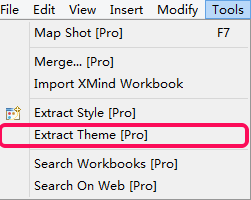
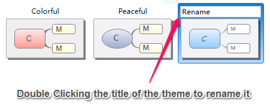
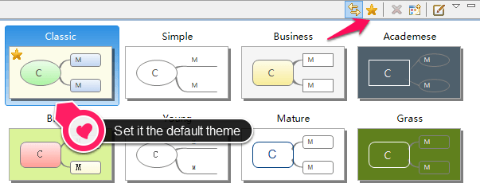
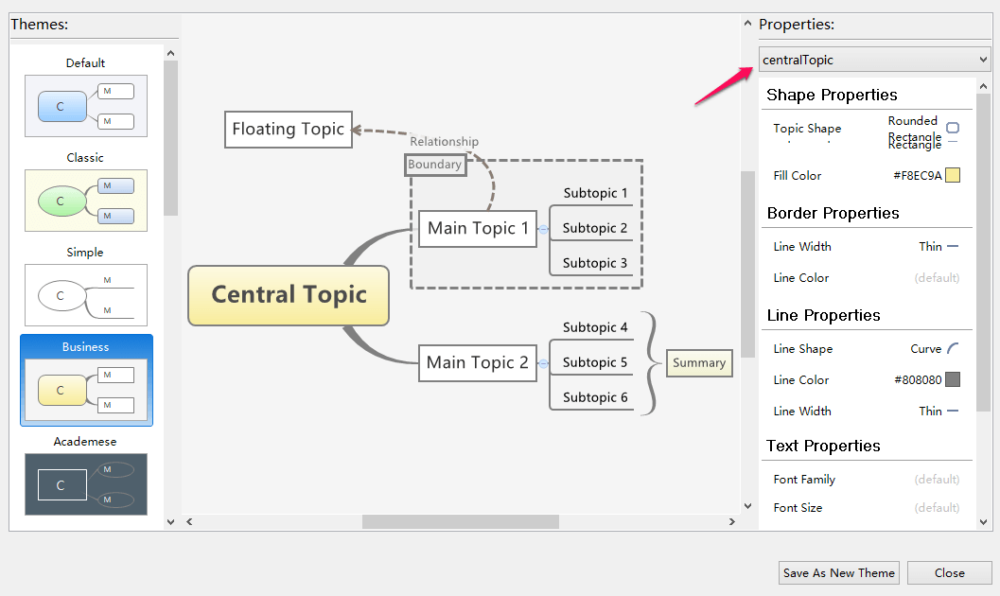

テーマとテーマのエディター
XMindのテーマは、マインドマップの色、図形、線のパターン、その他のグラフィカルな属性のコレクションです。テーマを適用することで、マインド マップ全体のスタイルを変更するのを、 1 つのステップで行えます。また、その他のマップで将来使用するために、テーマさらにカスタマイズして保存できます。XMind にはあらかじめ複数のよくデザインされたテーマが用意されています。
テーマの変更- メニューの[表示]→[テーマ]から、 テーマビューを開きます。
- 好きなテーマをダブルクリックします。
- 選択したテーマで、色、形、線、背景をデザインします。
- メニューから[ツール]→[テーマを抽出]を選択します。
 - [テーマビュー]画面でこの新しいテーマに名前を付けます。
 - この後、他のマップにこのテーマを適用できます。
注: すべてのテーマは、1種類のトピックスタイルと囲みのスタイルを使用できます。
既定のテーマの設定空白のマインドマップが作成された際に既定のテーマが適用されます。"既定のテーマとして設定"で任意のテーマを設定することができます。
- テーマビューを開き、対象のテーマをクリックします。
- テーマビューの右上隅に星のアイコンをクリックします。

テーマエディターテーマエディターでは、さらにテーマをデザインし、そのままプレビューできます。
- メニューの[表示]→[テーマ]を選択し、テーマビューを開きます。
- 対象のテーマを右クリックして[テーマを編集]を選択します。
- ダイアログボックスの右上隅で対象を選択し、対応するプロパティを変更します。
- [新規テーマとして保存]をクリックします。
